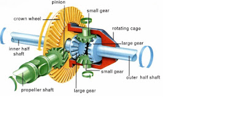

DiffrentialDifferential is a gear train that is also a part of power transmission. differential is used to convert the rotational motion of a shaft to the perpendicular shaft located to the main shaft, however this is not the main function of the differential. In automobiles and other wheeled vehicles, the differential allows the outer drive wheel to rotate faster than the inner drive wheel during a turn. During the turning of a vehicle the outer wheel has to travel a farther distance than the inner wheel, in this condition if the speed of both the wheel are same the turning becomes impossible. So, in order to make the turn possible differential reduces the speed of the inner wheel than that of the outer wheel keeping the speed ratio constant. Different components of a differential gear train are: 1. Pinion gear 1. Pinion gear Generally, in today's automobile differential system the gears used are bevel gears. The propeller shaft drives the pinion which in turn drives the ring gear. a rotating carriage is attached to the ring gear which rotates along with the ring gear transferring the rotary motion to the side gears that are attached to the left and right axle. While in a straight line motion the speed ratio of the inner shaft and the outer shaft is same, but while turning of the vehicle the spider gears come into action reducing the inner shaft's speed and increasing the outer shafts speed keeping the speed ratio constant. This mechanism makes the turning of the Vehicle possible. The designing of the differential gears is also as same as that of the process discussed in the article the only difference is that the calculations of ratios are made for bevel gears instead of the spur or helical gears. The design are made separately in CAD software and assembled then after. The assembled gear train is then meshed to check the motion of one gear due to the motion of driver gear. After the designing process the designs are simulated and results are compared with the experimental data to verify the design. |